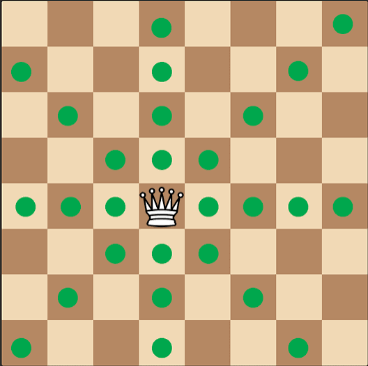
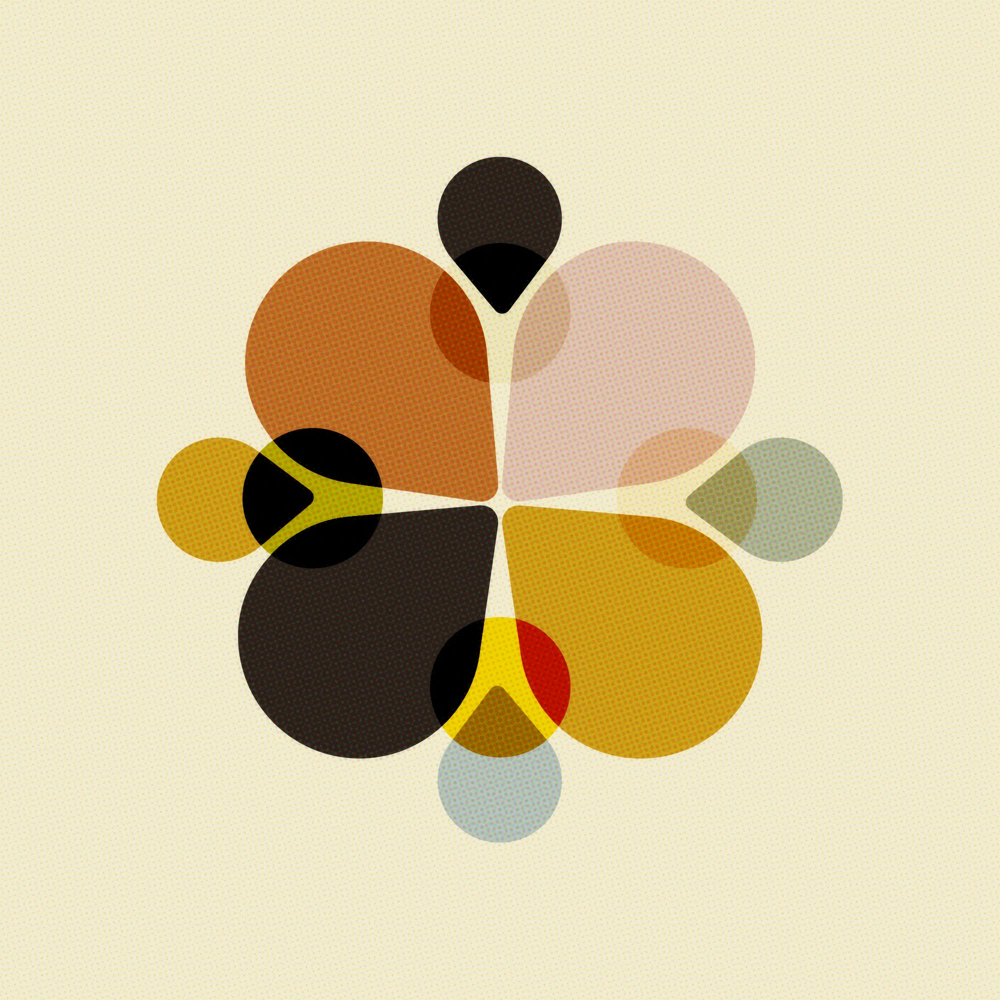

Like a queen reaching every corner of the board, I expanded my research project into an initiative that brings inclusive learning experiences to visually impaired children.
Turning an award-winning research project into the first step of a long-term initiative.

My research project showed that an inclusive board game could make geographical learning more accessible for visually impaired children. However, I soon realised that a single game alone could not create lasting change.
Instead of letting the project end after the competition, I founded Lem to bring the board game into real learning environments and begin building a community around inclusive education.
Rather than simply donating the game, we partnered with schools and learning centres to organise interactive learning sessions where children explored geography through tactile gameplay and audio storytelling. Every workshop became an opportunity to observe how children learned, gather feedback, and continue refining both the game and the activities around it.
Highlights
One of the biggest lessons was learning that inclusion is found in the smallest details.
Every activity had to be redesigned so children with visual impairments could participate independently. Before each workshop, our team tested games and activities while blindfolded, helping us identify barriers we had overlooked and rethink instructions, materials, and interactions from the children's perspective.
At the same time, I developed training sessions for volunteers, preparing them not only to facilitate the board game but also to communicate confidently and respectfully with visually impaired children.
Creating an inclusive educational experience also meant helping the wider community understand why it mattered.
We organised fundraising campaigns to produce and distribute more board games, collaborated with schools and community partners, and created communication campaigns that shared stories about visually impaired children — not to highlight their disabilities, but to help others recognise their abilities, creativity, and potential.
Although Lem is still in its early stages, it has already grown far beyond a research project.
Building Lem taught me that meaningful innovation is not about creating one successful product. It is about continuously listening, adapting, and bringing people together to make that solution sustainable.
More importantly, I realised that accessibility cannot be designed for a community without first learning from that community. Every workshop, every volunteer training session, and every blindfold test reminded me that empathy is not simply understanding someone's challenges; it is redesigning experiences so everyone can participate equally.
That realisation became the foundation of my aspiration to build a social enterprise dedicated to inclusive education.
View my aspiration hereClick each piece to discover its story.